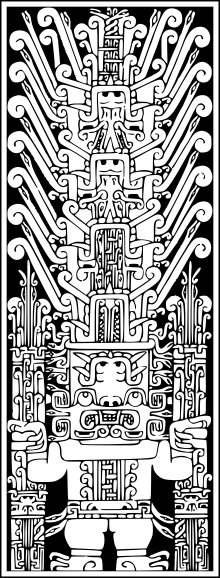

UNIVERSIDAD NACIONAL
FEDERICO VILLARREAL
<<<<<<<<<<<<<<<<<<<<<<< <<<<<<<<<<<<<<<<<<<<<<<<<< <<<<<<<<<<<<
Algunos libros son probados, otros devorados, poquísimos masticados y digeridos
>>>>>>>>>>>>>>>>>>>>>>> >>>>>>>>>>>>>>>>>>>>>>>>>> >>>>>>>>>>>>